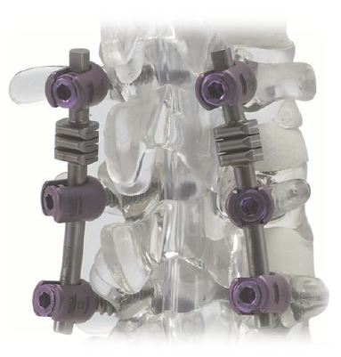

Coluna e ortopedia
Cifoplastia com balão
Indicações
- Fratura por compressão vertebral
- Fratura esteolítica
- Fraturas ósseas metastáticas
Sistema de Fixação Espinhal

Contra-indicações
- Osteoporose grave
- Fracturas de ruptura instáveis e fraturas de compressão
- Tumores destrutivos
- Infecções agudas
- Cicatriz peridural extensa
Estabilização com barras semi-rígidas
Indicações
- Doença degenerativa discal (L1 a S1)
- Espondilolistesis
- Instabilidade iatrogênica
- Estenosis Espinal
- Redução de degeneração adjacente Complemento a fusão
Características
- Sistema inovador de barra semirrígida com foco na preservação do movimento.
- Barras com tripla onda proporcionam 15° de flexão e 10° extensão (onda dupla proporciona 10° de flexão e 5 de extensão).
Artroscopia
Trabalhamos com uma linha bastante completa no que se refere a Radiofrequência para artroscopia. Em nossa linha contamos com Eletrodos de ablação, ressecção, coagulação, contração, etc. Material seguro e de excelente usabilidade.
RF para tratamento da dor
Especialmente desenvolvida para auxiliar o cirurgião na realização de procedimentos percutâneos minimamente invasivos.